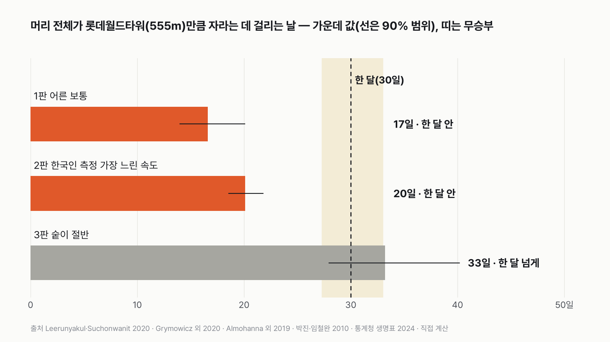
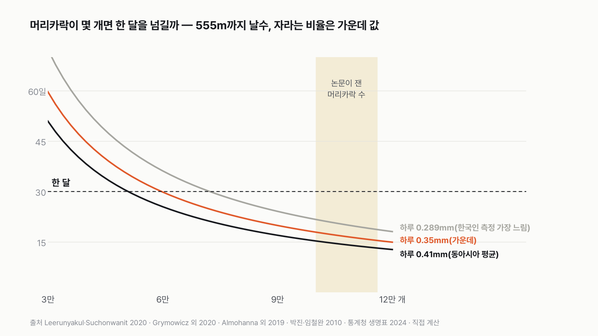
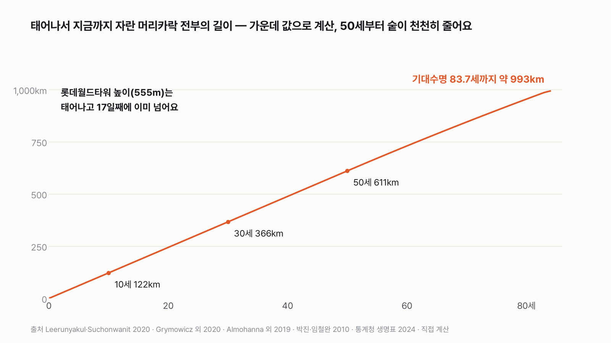

머리 전체가 롯데월드타워(555m)만큼 자라는 데 며칠?
한 올이 하루에 자라는 길이는 1mm도 안 돼요. 555m까지 며칠이 걸릴지 먼저 골라 주세요.
독자 투표
머리카락 전부가 자라서 롯데월드타워 높이(555m)가 되는 데, 한 달이 넘게 걸릴까?
- 머리카락은 하루하루 조금씩 자라요. 머리에 난 머리카락이 하루에 자라는 길이를 전부 이으면 얼마나 될까요?
- 비교 상대는 우리나라에서 가장 높은 건물, 롯데월드타워(555m)예요.
- 머리 전체가 타워 높이만큼 자라는 데 한 달 안에 될지, 한 달이 넘게 걸릴지 세 판으로 재 봤어요. 투표하면 결과가 바로 아래에 열려요.
조건과 규칙
- 머리카락이 자라는 속도와 머리카락 수는 피부과 논문에서 잰 값을 써요. 한국인을 잰 연구가 있으면 그 값도 함께 써요.
- 어른 머리를 기준으로 해요. 아기나 탈모가 있는 경우는 따로 다뤄요.
- 세 판으로 재요. 논문 값 그대로인 보통 어른, 한국인을 잰 연구에서 가장 느린 속도, 숱이 절반인 경우예요.
결과 요약
3판 2승 1패 → 최종 '한 달 안에'. 어른 머리 기준 17일이면 555m를 넘어요.
- 어른 머리 전체는 하루에 약 33m씩 자라요. 그래서 롯데월드타워 높이 555m까지 17일이 걸려요(가정에 따라 14~20일).
- 한국인을 잰 연구에서 가장 느린 속도를 넣어도 20일이에요. 한 달을 넘기려면 머리카락이 6만 개 아래이거나, 하루 0.19mm보다 느리게 자라야 해요.
- 숱이 절반이면 33일로, 한 달을 살짝 넘겨요. 판정은 '한 달 넘게'지만 무승부 경계에 바로 붙어 있어요.
그래서? 한 올은 하찮아 보여도 10만 개 넘게 함께 자라요. 머리 위에서 하루 33m, 아파트 12층 높이(한 층 2.8m)만큼이 매일 자라요.
독자 예상 vs 데이터 결과
머리카락 전부가 자라서 롯데월드타워 높이(555m)가 되는 데, 한 달이 넘게 걸릴까?
데이터로 보면 한 달 안에. 어른 머리 기준 17일이에요. 한국인 측정 가장 느린 속도로도 20일, 숱이 절반이면 33일로 한 달을 살짝 넘겨요.


| 판 | 555m까지 날수(가운데 값) | 90% 범위 | 판정 |
|---|---|---|---|
| 1판 어른 보통 | 17일 | 14~20일 | 한 달 안 |
| 2판 한국인 측정 가장 느린 속도 | 20일 | 19~22일 | 한 달 안 |
| 3판 숱이 절반 | 33일 | 28~40일 | 한 달 넘게(경계) |
| 최종 | 3판 2승 1패 → 한 달 안에 |
판마다 같은 계산을 2만 번 다르게 돌렸어요. 자라는 속도, 머리카락 수, 자라는 중인 비율을 논문이 밝힌 범위 안에서 그때그때 다르게 뽑아서요. 표의 날수는 그 가운데 딱 중간에 오는 값이에요. 날수가 27일보다 짧으면 '한 달 안', 33일보다 길면 '한 달 넘게', 그 사이는 무승부로 정했어요.
1판 어른 보통: 한 달 안(17일)
어른 두피에는 머리카락이 10만~11.6만 개 있어요. 그 가운데 90% 안팎은 늘 자라는 중이고, 동아시아 사람의 머리카락은 하루 0.29~0.41mm씩 자라요. 이걸 다 곱하면 머리 전체가 하루에 자라는 길이는 약 33m예요. 555m를 33m로 나누면 17일이에요. 가장 적은 머리카락, 가장 느린 속도, 가장 낮은 비율을 한꺼번에 넣어도 23일이에요.
처음엔 한 올이 하루 0.35mm라는 숫자를 보고 몇 년은 걸리겠다고 생각했어요. 그런데 머리카락 수를 곱하는 순간 17일이 나와서 저도 놀랐어요. 한 올이 느린 만큼 수가 많아서 메워 주는 거예요.
2판 한국인 측정 가장 느린 속도: 한 달 안(20일)
해외 리뷰 논문은 동아시아 사람의 머리카락이 하루 0.41mm 자란다고 정리했지만, 한국인 42명을 사진으로 잰 연구에서는 0.289~0.327mm로 더 느렸어요. 가장 느린 0.289mm를 모두에게 넣어도 20일이에요. 속도가 30% 가까이 느려져도 한 달까지는 열흘이 남아요.
3판 숱이 절반: 한 달 넘게(33일, 경계)
나이가 들거나 탈모가 오면 머리카락 수가 줄어요. 숱을 절반으로 줄이면 머리 전체가 하루에 자라는 길이도 절반인 약 17m가 되고, 555m까지 33일이 걸려요. 2만 번 가운데 81%가 한 달을 넘겼어요. 판정 기준으로는 '한 달 넘게'지만, 무승부 경계(33일)에 겨우 걸친 결과예요.


한 달을 넘기는 조건
머리 전체가 하루에 18.5m보다 적게 자라면 한 달을 넘겨요. 다른 값을 가운데로 두면 머리카락이 약 6만 개(5만 9,700개)보다 적을 때예요. 논문이 잰 어른 머리카락 수(10만~11.6만 개)보다 40% 넘게 적은 수예요. 속도로 보면 하루 0.19mm보다 느려야 해요. 머리카락 수와 자라는 비율을 가장 불리하게 둬도 0.22mm보다 느려야 하는데, 이건 한국인 측정에서 가장 느린 값(0.289mm)보다도 25% 느린 속도예요.
점수 밖: 한 가닥, 그리고 평생
머리카락 한 올은 영원히 자라지 않아요. 자라는 시기(성장기)는 2~7년이고, 그 뒤엔 빠지고 같은 자리에서 새 머리카락이 나요. 그래서 한 올이 빠지기 전까지 자라는 길이는 가운데 값 57cm로, 타워의 약 1,000분의 1이에요. 한 올로 555m를 채우려면 4,300년이 넘게 걸려요.
반대로 머리 전체를 평생, 기대수명 83.7년 동안 더하면 약 992km예요. 롯데월드타워의 1,787배, 지구 둘레의 2.5%예요. 50세부터 숱이 천천히 준다고 넣었는데도 그래요. 그 가운데 지금 머리에 달린 건 많아야 약 52km라, 나머지 약 940km는 평생 미용실에서 잘리거나 빗과 베개 위로 빠져서 떠났어요.


나이로 보면
태어나서부터 쌓으면 10세까지 약 120km, 30세까지 약 370km, 50세까지 약 610km가 자라요. 어른 머리 기준으로 계산하면 17일 만에 타워 높이를 넘기는데, 아기는 머리카락이 가늘고 자라는 속도도 달라서 같은 계산을 그대로 적용할 수는 없어요. 그래서 날수는 '어른 머리 기준(가정)'이라고 부를게요.
이 규칙과 가정이면 최종 판정은 '한 달 안에'예요. 보통 어른이면 17일, 한국인 측정에서 가장 느린 속도로도 20일이고, 숱이 절반으로 줄어야 한 달 경계에 닿아요.
이 숫자는 어디서 왔나요
출처
기준일 논문 값은 2026년 11월 9일 확인했어요. 기대여명은 2024년 생명표예요.
Leerunyakul·Suchonwanit 2020,Clinical, Cosmetic and Investigational Dermatology
- 아시아인 머리카락 특징doi:10.2147/CCID.S247390원본 보기
동아시아인 자라는 속도 하루 0.411mm(표 1)
대한피부과학회지 2002(42명)
- 한국인 두피 사진 측정
한국인 자라는 속도 하루 0.289~0.327mm
박진·임철완 2010,대한피부과학회지
- 한국인 두피 모발량
두피 전체 11.2만 개, 자라는 중 89.6%
Han 외 2004,Annals of Dermatology
- 한국 남성 두피 밀도
㎠당 117~140개
Almohanna 외 2019,Dermatology and Therapy
- 비타민·미네랄과 탈모doi:10.1007/s13555-018-0278-6원본 보기
두피 모낭 약 10만 개, 90%가 자라는 중
Grymowicz 외 2020,International Journal of Molecular Sciences
- 호르몬과 모낭doi:10.3390/ijms21155342원본 보기
성장기 2~7년
통계청
- 생명표 2024KOSIS DT_1B42
0세 기대여명 83.69년
롯데월드타워 공식 누리집
- 롯데월드타워 소개
높이 555m, 123층
미국 항공우주국(NASA) 지구 자료표
- 지구 둘레
적도 둘레 40,075km
어떻게 셌나요
- 자라는 속도: 동아시아 사람의 머리카락은 하루 0.411mm(표준편차 0.053)라고 정리한 리뷰 논문(Leerunyakul·Suchonwanit 2020)의 표를 썼어요. 한국인 42명을 사진으로 잰 연구는 하루 0.289~0.327mm였어요. 두 값을 아우르는 0.29~0.41mm 사이에서 고르게 뽑았어요.
- 머리카락 수: 해외 논문이 흔히 쓰는 약 10만 개(Almohanna 외 2019)와, 한국인 20대 42명의 두피 전체를 센 11.2만 개(남성 11.6만, 여성 10.6만, 박진·임철완 2010) 사이에서 뽑았어요. 한국 남성 두피의 밀도는 ㎠당 117~140개로 잰 연구(Han 외 2004)도 있어요.
- 자라는 중인 비율: 머리카락의 약 90%가 자라는 중이에요(Almohanna 2019, 한국인 89.6%). 85~92%로 뽑았어요.
- 날수 = 555m ÷ (머리카락 수 × 자라는 중인 비율 × 하루 자라는 길이)예요.
- 3판 숱이 절반(가정): 머리카락 수만 반으로 줄이고, 속도와 비율은 1판과 같은 범위로 뒀어요.
- 점수 밖 값: 한 가닥 길이 = 하루 자라는 길이 × 성장기(2~7년, Grymowicz 외 2020). 평생 길이는 2024년 생명표 0세 기대여명 83.69년(통계청) 동안 더했고, 50세부터 80세에 처음의 75~100%가 되도록 숱이 준다고 가정했어요.
한계 4가지
이 데이터로 말할 수 없는 것
- 한국인 자라는 속도(2002)와 두피 전체 머리카락 수(2010)는 원문을 직접 열지 못해, 학술 색인에 실린 초록 값으로만 확인했어요. 원문으로 확인한 해외 값과 범위를 함께 써서 판정이 이 두 값에 기대지 않게 했어요.
- 한국인 연구는 20대 수십 명을 잰 거라 나이와 사람마다 차이가 커요.
- 자라는 속도는 나이, 계절, 두피 자리마다 달라요. 아기와 노인의 속도를 따로 잰 자료는 쓰지 않았어요.
- 몸의 다른 털과 수염은 넣지 않았어요.
다음 대결
대결 다 보기실험맨 vs 집고양이
실험맨(평균 한국인)이 집고양이와 50m 달리기를 하면 누가 이길까?
A실험맨vsB집고양이
투표하러 가기
대결투표했어요실험맨 vs 롯데월드타워 계단
실험맨(평균 한국인)은 롯데월드타워 123층 계단을 1시간 안에 오를 수 있을까?
A1시간 안에 오른다vsB1시간 넘게 걸린다
투표하러 가기
대결투표했어요실험맨 vs 서울~부산
평균 한국인이 1년 동안 걷는 거리로 서울~부산을 왕복할 수 있을까?
A왕복 넘는다vsB못 미친다
투표하러 가기
대결투표했어요실험맨 vs 제주 해녀
평균 한국인이 제주 해녀를 이기는 조건이 있을까?
A있다vsB없다
투표하러 가기
대결투표했어요스마트폰 vs 밥
한국인은 스마트폰 보는 시간이 더 길까, 밥 먹는 시간이 더 길까?
A스마트폰vsB밥 먹기
투표하러 가기
대결투표했어요커피 vs 다른 음료
30대에게 커피는 다른 음료를 다 합친 것보다 많을까?
A많다vsB적다
투표하러 가기
대결투표했어요결혼 vs 이혼
우리나라에서 하루에 결혼하는 커플은 이혼하는 커플의 몇 배일까?
A2배 넘게vsB2배 이하
투표하러 가기
대결투표했어요로또 vs 벼락
한국에서 로또 1등 되기 vs 벼락 맞기, 뭐가 더 흔할까?
A로또 1등vsB벼락 맞기
투표하러 가기
새 글 나오면 받아 보기
피드 리더 앱에 이 사이트 주소를 한 번 넣어 두면, 새 글이 올라올 때 앱에 떠요. 가입이나 메일 주소는 필요 없어요.
받는 법 보기
- 피드 리더 앱을 하나 골라요. 새 글을 모아 보여 주는 앱이에요. 예를 들면 Feedly나 Inoreader가 있어요. 둘 다 무료고 웹·휴대폰에서 써요.
- 앱에서 '구독 추가'(+)를 누르고 아래 주소를 붙여 넣어요.
- 끝이에요. 새 글이 올라오면 앱 목록에 떠요.
https://protofu.github.io/opendata-insight/feed.xmlFeedly를 쓴다면 여기를 눌러 바로 추가할 수도 있어요.